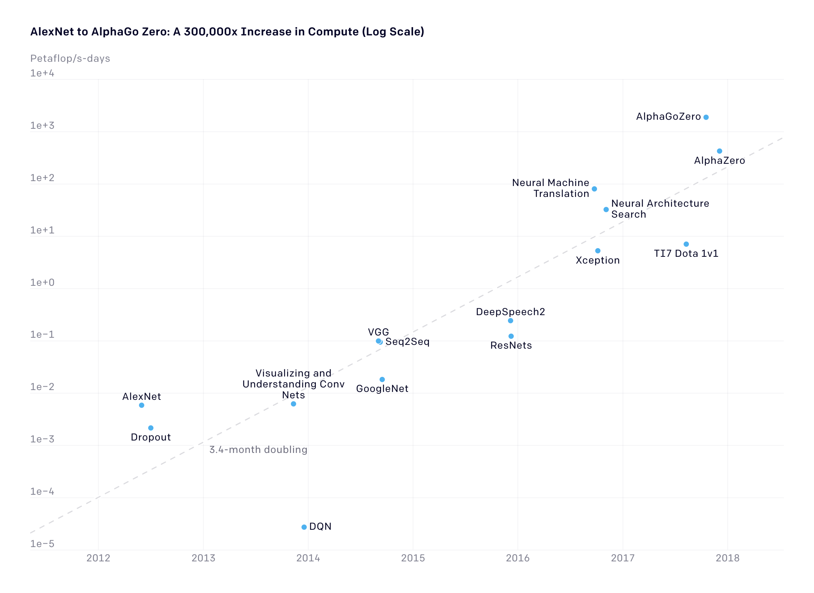
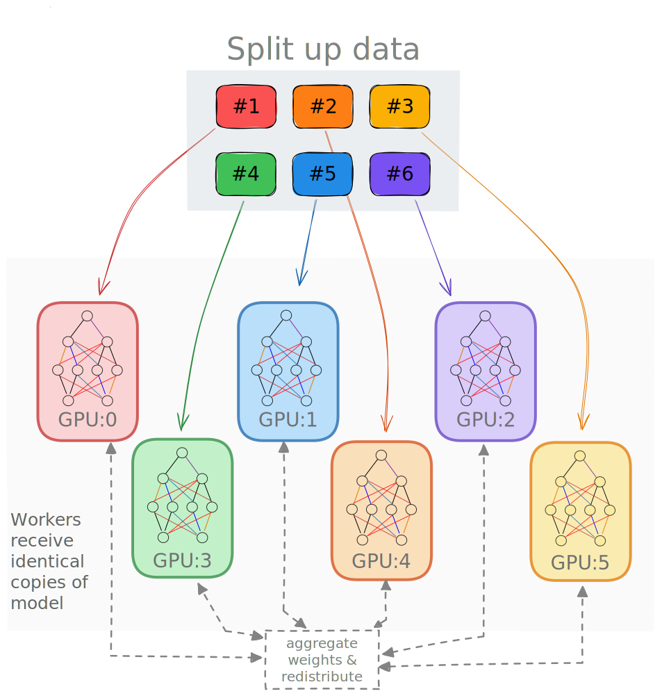

flowchart TD
0["GPU0"] --> 1["GPU 1"]
0 --> 2["GPU 2"]
0 -->|Model + Optimizer State| 3["GPU 3"]
0 --> ...
0 --> N["GPU N"]
Parallel Training Techniques
2024-03-12
Parallel Training Techniques

AI 🤝 Compute

[…] since 2012, the amount of [AI] compute used has been increasing exponentially with a 3.4-month doubling time1, or [300,000x]. Source.
AI 🤝 Compute [Modern Era]
Figure 2: [300,000x since 2012] vs [7x for Moore’s Law]. Source.
Single GPU Training

Figure 3: SLOW !! model size limited by GPU memory
Collective Communication
Typically, we assign 1 rank to each GPU (or accelerator), i.e. rank \in [0, 1, ..., WORLD_SIZE-1].
- Perform reductions on data (e.g.
sum,min,max) across ranks, send result back to everyone

- Perform a reduction on data across ranks, send to individual

broadcast(send) a tensorxfrom one rank to all ranks

- Gathers tensors from the whole group in a list.

- Scatters a list of tensors to the whole group

Collective Operations
⌛ Timeouts
- Collective operations have to be called for each
rankto form a complete collective operation.- Failure to do so will result in other ranks waiting indefinitely
Why Distributed Training?
- Splitting data across workers \longrightarrow larger batch size1
- [
micro_batch_size = 1] \times [NGPUs] \rightarrow [global_batch_size = N]
- [
- Smooth loss landscape
- Improved gradient estimators
- Less iterations needed for same number of epochs
- May need to train for more epochs if another change is not made
- e.g. scaling learning rate
- See Large Batch Training of Convolutional Networks
Recent Progress
| Year | Author | Batch Size | Processor | # Processors | Time | Accuracy |
|---|---|---|---|---|---|---|
| 2016 | He | 256 | Tesla P100 | 8 | 29 Hour | 75.30% |
| 2019 | Yamazaki | 81,920 | Tesla V100 | 2048 | 1.2 Min | 75.08% |
Data Parallel Training

Figure 9
Data Parallel Training
Data Parallel Training
Figure 10
Data Parallel Training
Data Parallel Training
- Each worker has copy of complete model
- Global batch of data split into multiple mini-batches
- Each worker computes the corresponding loss and gradients from local data
- Before updating parameters, loss and gradients averaged across workers

Data Parallel Training

Figure 11
Deal with Data
At each training step, we want to ensure that each worker receives unique data
This can be done in one of two ways:
- Manually partition data (ahead of time) and assign different sections to different workers
- Each worker can only see their local portion of the data
- From each worker, randomly select a mini-batch
- Each worker can see the full dataset
⚠️ Warning
Don’t forget your seed!
When randomly selecting, it is important that each worker uses different seeds to ensure they receive unique data
- Manually partition data (ahead of time) and assign different sections to different workers
Best Practices
- Use parallel IO whenever possible
- Feed each rank from different files
- Use MPI IO to have each rank read its own batch from a file
- Use several ranks to read data, MPI to scatter to remaining ranks
- Most practical in big at-scale training
🤝 Keeping things in Sync
Computation stalls during communication !!
Keeping the communication to computation ratio small is important for effective scaling.
- Take advantage of data storage
- Use striping on lustre
- Use the right optimizations for Aurora, Polaris, etc.
- Preload data when possible
- Offloading to a GPU frees CPU cycles for loading the next batch of data
- minimize IO latency this way
- Offloading to a GPU frees CPU cycles for loading the next batch of data
Broadcast Initial State
- At the start of training (or when loading from a checkpoint), we want all of our workers to be initialized consistently
- Broadcast the model and optimizer states from
rank() == 0worker
- Broadcast the model and optimizer states from
Model Parallel Training
Split up network over multiple workers
- Each receives disjoint subset
- All communication associated with subsets are distributed
Communication whenever dataflow between two subsets
Typically more complicated to implement than data parallel training
Suitable when the model is too large to fit onto a single device (CPU / GPU)

Model Parallel Training: Example
y = \sum_{i} w_{i} * x_{i} = w_0 * x_0 + w_1 * x_1 + w_2 * x_2
- Compute y_{0} = w_{0} * x_{0} and send to \longrightarrow
GPU1 - Compute y_{1} = y_{0} + w_{1} * x_{1} and send to \longrightarrow
GPU2 - Compute y = y_{1} * w_{2} * x_{2} ✅
flowchart LR
subgraph X0["GPU0"]
direction LR
a["w0"]
end
subgraph X1["GPU1"]
direction LR
b["w1"]
end
subgraph X2["GPU2"]
direction LR
c["w2"]
end
X1 & X0 <--> X2
X0 <--> X1
x["x0, x1, x2"] --> X0
Hands-On
Thank you!
This research used resources of the Argonne Leadership Computing Facility, which is a DOE Office of Science User Facility supported under Contract DE-AC02-06CH11357.
Backups
Forward Pass
- Each worker has identical copy of model
- Global batch of data split across workers
- Loss + Grads averaged across workers before updating parameters
flowchart TD
D["dataset"] --> S1["subset_1"]
D --> S2["subset_2"]
D --> S3["subset_3"]
D --> S4["subset_4"]
S1 --> W1["Worker 1"]
S2 --> W2["Worker 2"]
S3 --> W3["Worker 3"]
S4 --> W4["Worker 4"]
Organization
flowchart TD
subgraph identifier[" "]
direction LR
GPU1
GPU2
GPU3
GPU4
end
subgraph Network
direction LR
Model
end
Network -.-> GPU1
Network -.-> GPU2
Network -.-> GPU3
Network -.-> GPU4
subset1 --> GPU1
subset2 --> GPU2
subset3 --> GPU3
subset4 --> GPU4
subgraph Dataset
direction LR
subset1
subset2
subset3
subset4
end
subgraph Communication
direction LR
GPU1 <-.-> AR[Allreduce]
GPU2 <-.-> AR
GPU3 <-.-> AR
GPU4 <-.-> AR
end
AR ==>|Broadcast| Network
Data Parallel Training
- Each worker receives identical copy of model and unique subset of data
flowchart TD
subgraph identifier[" "]
direction LR
data --> subset1
data --> subset2
data --> subset3
data --> subset4
subset1
subset2
subset3
subset4
end
subgraph Workers
direction LR
subset1 --> GPX1["GPU1"]
subset2 --> GPX2["GPU2"]
subset3 --> GPX3["GPU3"]
subset4 --> GPX4["GPU4"]
end
GPX1 <.-> Communication["Avg + Distribute Gradients"]
GPX2 <.-> Communication
GPX3 <.-> Communication
GPX4 <.-> Communication
Emergent Abilities

Emergent abilities of Large Language Models Yao et al. (2023)
Training LLMs


Life-Cycle of the LLM
Data collection + preprocessing
Pre-training
- Architecture decisions:
{model_size, hyperparameters,
parallelism, lr_schedule, ...}
- Architecture decisions:
Supervised Fine-Tuning
- Instruction Tuning
- Alignment
Deploy (+ monitor, re-evaluate, etc.)

Pre-training: Virtually all of the compute used during pretraining phase.
Forward Pass
Generating Text
Life-Cycle of the LLM: Pre-training
Figure 17: Pre-training: Virtually all of the compute used during pretraining phase
Life-Cycle of the LLM: Fine-Tuning

Assistant Models

saforem2/wordplay 🎮💬
- Fork of Andrej Karpathy’s
nanoGPT

Figure 19: The simplest, fastest repository for training / finetuning GPT based models.
saforem2/wordplay 🎮💬

nanoGPT

wordplay 🎮 💬
nanoGPT, transformed.
Install
Dependencies
transformersfortransformers (to load GPT-2checkpoints)datasetsfordatasets (if you want to use OpenWebText) tiktokenfor OpenAI’s fast BPE codewandbfor optional loggingtqdmfor progress bars
Quick Start
We start with training a character-level GPT on the works of Shakespeare.
- Downloading the data (~ 1MB) file
- Convert raw text to one large stream of integers
This will create
data/shakespeare_char/{train.bin, val.bin}.
Model model.py
class CausalSelfAttention(nn.Module):
def __init__(self, config: GPTModelConfig):
super().__init__()
assert config.n_embd % config.n_head == 0
# key, query, value projections for all heads, but in a batch
self.c_attn = nn.Linear(
config.n_embd,
3 * config.n_embd,
bias=config.bias
)
# output projection
self.c_proj = nn.Linear(
config.n_embd,
config.n_embd,
bias=config.bias
)
# regularization
self.attn_dropout = nn.Dropout(config.dropout)
self.resid_dropout = nn.Dropout(config.dropout)
self.n_head = config.n_head
self.n_embd = config.n_embd
self.dropout = config.dropout
# flash attention make GPU go brrrrr but support is only in
# PyTorch >= 2.0
self.flash = hasattr(
torch.nn.functional,
'scaled_dot_product_attention'
)
# if self.flash and RANK == 0:
# log.warning(
# f'Using torch.nn.functional.scaled_dot_product_attention'
# '(Flash Attn)'
# )
if not self.flash:
log.warning(
"WARNING: using slow attention."
"Flash Attention requires PyTorch >= 2.0"
)
# causal mask to ensure that attention is only applied to the left
# in the input sequence
self.register_buffer(
"bias",
torch.tril(
torch.ones(
config.block_size,
config.block_size
)
).view(1, 1, config.block_size, config.block_size)
)
def forward(self, x):
# batch size, sequence length, embedding dimensionality (n_embd)
B, T, C = x.size()
# calculate query, key, values for all heads in batch and move head
# forward to be the batch dim
q, k, v = self.c_attn(x).split(self.n_embd, dim=2)
# (B, nh, T, hs)
k = k.view(B, T, self.n_head, C // self.n_head).transpose(1, 2)
# (B, nh, T, hs)
q = q.view(B, T, self.n_head, C // self.n_head).transpose(1, 2)
# (B, nh, T, hs)
v = v.view(B, T, self.n_head, C // self.n_head).transpose(1, 2)
# causal self-attention; Self-attend:
# (B, nh, T, hs) x (B, nh, hs, T) -> (B, nh, T, T)
if self.flash:
# efficient attention using Flash Attention CUDA kernels
y = torch.nn.functional.scaled_dot_product_attention(
q,
k,
v,
attn_mask=None,
dropout_p=(self.dropout if self.training else 0),
is_causal=True
)
else:
# manual implementation of attention
att = (q @ k.transpose(-2, -1)) * (1.0 / math.sqrt(k.size(-1)))
att = att.masked_fill(
self.bias[:, :, :T, :T] == 0, # type:ignore
float('-inf')
)
att = F.softmax(att, dim=-1)
att = self.attn_dropout(att)
y = att @ v # (B, nh, T, T) x (B, nh, T, hs) -> (B, nh, T, hs)
# re-assemble all head outputs side by side
y = y.transpose(1, 2).contiguous().view(B, T, C)
# output projection
y = self.resid_dropout(self.c_proj(y))
return yclass LayerNorm(nn.Module):
"""
LayerNorm but with an optional bias.
(PyTorch doesn't support simply bias=False)
"""
def __init__(self, ndim, bias):
super().__init__()
self.weight = nn.Parameter(torch.ones(ndim))
self.bias = nn.Parameter(torch.zeros(ndim)) if bias else None
def forward(self, input):
return F.layer_norm(
input,
self.weight.shape,
self.weight,
self.bias,
1e-5
)class MLP(nn.Module):
def __init__(
self,
config: GPTModelConfig,
activation: str = 'gelu',
):
super().__init__()
self.c_fc = nn.Linear(
config.n_embd,
4 * config.n_embd,
bias=config.bias
)
if activation.lower() in ACTIVATIONS:
self.act_fn = ACTIVATIONS[activation.lower()]
else:
try:
act_fn = getattr(nn, activation)
assert callable(act_fn)
self.act_fn = act_fn()
except Exception as exc:
log.error(f'{activation} not yet supported!')
raise exc
# self.gelu = nn.GELU()
self.c_proj = nn.Linear(
4 * config.n_embd,
config.n_embd,
bias=config.bias
)
self.dropout = nn.Dropout(config.dropout)
def forward(self, x):
x = self.c_fc(x)
# x = self.gelu(x)
x = self.act_fn(x)
x = self.c_proj(x)
x = self.dropout(x)
return xclass Block(nn.Module):
def __init__(self, config: GPTModelConfig):
super().__init__()
self.ln_1 = LayerNorm(config.n_embd, bias=config.bias)
self.attn = CausalSelfAttention(config)
self.ln_2 = LayerNorm(config.n_embd, bias=config.bias)
self.mlp = MLP(config)
def forward(self, x):
x = x + self.attn(self.ln_1(x))
x = x + self.mlp(self.ln_2(x))
return xclass GPT(nn.Module):
def __init__(self, config: GPTModelConfig):
super().__init__()
assert config.vocab_size is not None
assert config.block_size is not None
self.config = config
self.transformer = nn.ModuleDict(dict(
wte=nn.Embedding(config.vocab_size, config.n_embd),
wpe=nn.Embedding(config.block_size, config.n_embd),
drop=nn.Dropout(config.dropout),
h=nn.ModuleList([Block(config) for _ in range(config.n_layer)]),
ln_f=LayerNorm(config.n_embd, bias=config.bias),
))
self.lm_head = nn.Linear(config.n_embd, config.vocab_size, bias=False)
# with weight tying when using torch.compile() some warnings get
# generated: "UserWarning: functional_call was passed multiple values
# for tied weights. This behavior is deprecated and will be an error in
# future versions" not 100% sure what this is, so far seems to be
# harmless. TODO investigate
# https://paperswithcode.com/method/weight-tying
self.transformer.wte.weight = self.lm_head.weight # type:ignore
# init all weights
self.apply(self._init_weights)
# apply special scaled init to the residual projections, per GPT-2
for pn, p in self.named_parameters():
if pn.endswith('c_proj.weight'):
torch.nn.init.normal_(
p,
mean=0.0,
std=0.02/math.sqrt(2 * config.n_layer)
)
# report number of parameters
log.info("number of parameters: %.2fM" % (self.get_num_params()/1e6,))
def get_num_params(self, non_embedding=True):
"""
Return the number of parameters in the model.
For non-embedding count (default), the position embeddings get
subtracted.
The token embeddings would too, except due to the parameter sharing
these params are actually used as weights in the final layer, so we
include them.
"""
n_params = sum(p.numel() for p in self.parameters())
if non_embedding:
n_params -= self.transformer.wpe.weight.numel() # type:ignore
return n_params
def _init_weights(self, module):
if isinstance(module, nn.Linear):
torch.nn.init.normal_(module.weight, mean=0.0, std=0.02)
if module.bias is not None:
torch.nn.init.zeros_(module.bias)
elif isinstance(module, nn.Embedding):
torch.nn.init.normal_(module.weight, mean=0.0, std=0.02)
def forward(self, idx, targets=None):
device = idx.device
b, t = idx.size()
assert t <= self.config.block_size, (
f"Cannot forward sequence of length {t}, "
"block size is only {self.config.block_size}"
)
pos = torch.arange(
0,
t,
dtype=torch.long,
device=device
) # shape (t)
# forward the GPT model itself
# token embeddings of shape (b, t, n_embd)
tok_emb = self.transformer.wte(idx) # type:ignore
# position embeddings of shape (t, n_embd)
pos_emb = self.transformer.wpe(pos) # type:ignore
x = self.transformer.drop(tok_emb + pos_emb) # type:ignore
for block in self.transformer.h: # type:ignore
x = block(x)
x = self.transformer.ln_f(x) # type:ignore
if targets is not None:
# if we are given some desired targets also calculate the loss
logits = self.lm_head(x)
loss = F.cross_entropy(
logits.view(
-1,
logits.size(-1)
),
targets.view(-1),
ignore_index=-1
)
else:
# inference-time mini-optimization: only forward the lm_head on the
# very last position
# note: using list [-1] to preserve the time dim
logits = self.lm_head(x[:, [-1], :])
loss = None
return logits, loss
def crop_block_size(self, block_size):
# model surgery to decrease the block size if necessary e.g. we may
# load the GPT2 pretrained model checkpoint (block size 1024) but want
# to use a smaller block size for some smaller, simpler model
assert block_size <= self.config.block_size
self.config.block_size = block_size
self.transformer.wpe.weight = ( # type:ignore
nn.Parameter(
self.transformer.wpe.weight[:block_size] # type:ignore
)
)
for block in self.transformer.h: # type:ignore
if hasattr(block.attn, 'bias'):
block.attn.bias = (
block.attn.bias[:, :, :block_size, :block_size]
)
@classmethod
def from_pretrained(cls, model_type, override_args=None):
assert model_type in {'gpt2', 'gpt2-medium', 'gpt2-large', 'gpt2-xl'}
override_args = override_args or {} # default to empty dict
# only dropout can be overridden see more notes below
assert all(k == 'dropout' for k in override_args)
from transformers import GPT2LMHeadModel
log.info(f"loading weights from pretrained gpt: {model_type=}")
# n_layer, n_head and n_embd are determined from model_type
# gpt2: 124M params
# gpt2-medium: 350M params
# gpt2-large: 774M params
# gpt2-xl: 1558M params
config_args = {
# 'baby-llama2': dict(n_layer=16, n_head=16, n_embed=1024),
# 'llama2-7b': dict(n_layer=32, n_head=32, n_embd=4096),
'gpt2': dict(n_layer=12, n_head=12, n_embd=768),
'gpt2-medium': dict(n_layer=24, n_head=16, n_embd=1024),
'gpt2-large': dict(n_layer=36, n_head=20, n_embd=1280),
'gpt2-xl': dict(n_layer=48, n_head=25, n_embd=1600),
}[model_type]
# we can override the dropout rate, if desired
if 'dropout' in override_args:
log.info(f"overriding dropout rate to {override_args['dropout']}")
config_args['dropout'] = override_args['dropout']
# create a from-scratch initialized minGPT model
log.info("forcing vocab_size=50257, block_size=1024, bias=True")
config = GPTModelConfig(
**config_args,
block_size=1024, # always 1024 for GPT model checkpoints
vocab_size=50257, # always 50257 for GPT model checkpoints
bias=True, # always True for GPT model checkpoints
)
model = GPT(config)
sd = model.state_dict()
sd_keys = sd.keys()
sd_keys = [
k for k in sd_keys if not k.endswith('.attn.bias')
] # discard this mask / buffer, not a param
# init a huggingface/transformers model
model_hf = GPT2LMHeadModel.from_pretrained(model_type)
sd_hf = model_hf.state_dict()
# copy while ensuring all of the parameters are aligned and match in
# names and shapes
sd_keys_hf = sd_hf.keys()
sd_keys_hf = [
k for k in sd_keys_hf if not k.endswith('.attn.masked_bias')
] # ignore these, just a buffer
sd_keys_hf = [
k for k in sd_keys_hf if not k.endswith('.attn.bias')
] # same, just the mask (buffer)
transposed = [
'attn.c_attn.weight',
'attn.c_proj.weight',
'mlp.c_fc.weight',
'mlp.c_proj.weight'
]
# basically the openai checkpoints use a "Conv1D" module, but we only
# want to use a vanilla Linear this means that we have to transpose
# these weights when we import them
assert len(sd_keys_hf) == len(sd_keys), (
f"mismatched keys: {len(sd_keys_hf)} != {len(sd_keys)}"
)
for k in sd_keys_hf:
if any(k.endswith(w) for w in transposed):
# special treatment for the Conv1D weights we need to transpose
assert sd_hf[k].shape[::-1] == sd[k].shape
with torch.no_grad():
sd[k].copy_(sd_hf[k].t())
else:
# vanilla copy over the other parameters
assert sd_hf[k].shape == sd[k].shape
with torch.no_grad():
sd[k].copy_(sd_hf[k])
return model
def configure_optimizers(
self,
weight_decay,
learning_rate,
betas,
device_type
):
# start with all of the candidate parameters
# filter out those that do not require grad
# param_dict = {
# pn: p for pn, p in param_dict.items() if p.requires_grad
# }
param_dict = {
pn: p for pn, p in self.named_parameters() if p.requires_grad
}
# create optim groups. Any parameters that is 2D will be weight
# decayed, otherwise no. i.e. all weight tensors in matmuls +
# embeddings decay, all biases and layernorms don't.
decay_params = [p for _, p in param_dict.items() if p.dim() >= 2]
nodecay_params = [p for _, p in param_dict.items() if p.dim() < 2]
optim_groups = [
{'params': decay_params, 'weight_decay': weight_decay},
{'params': nodecay_params, 'weight_decay': 0.0}
]
num_decay_params = sum(p.numel() for p in decay_params)
num_nodecay_params = sum(p.numel() for p in nodecay_params)
log.info(
f"num decayed parameter tensors: {len(decay_params)}, "
f"with {num_decay_params:,} parameters"
)
log.info(
f"num non-decayed parameter tensors: {len(nodecay_params)}, "
f"with {num_nodecay_params:,} parameters"
)
# Create AdamW optimizer and use the fused version if it is available
fused_available = (
'fused' in inspect.signature(torch.optim.AdamW).parameters
)
use_fused = fused_available and device_type == 'cuda'
extra_args = dict(fused=True) if use_fused else {}
optimizer = torch.optim.AdamW(
optim_groups,
lr=learning_rate,
betas=betas,
**extra_args
)
log.info(f"using fused AdamW: {use_fused}")
return optimizer
def estimate_mfu(self, fwdbwd_per_iter, dt):
"""Estimate model flops utilization (MFU)
(in units of A100 bfloat16 peak FLOPS)
"""
# first estimate the number of flops we do per iteration.
# see PaLM paper Appendix B as ref: https://arxiv.org/abs/2204.02311
N = self.get_num_params()
cfg = self.config
L, H, Q, T = (
cfg.n_layer,
cfg.n_head,
cfg.n_embd//cfg.n_head,
cfg.block_size
)
flops_per_token = 6*N + 12*L*H*Q*T
flops_per_fwdbwd = flops_per_token * T
flops_per_iter = flops_per_fwdbwd * fwdbwd_per_iter
# express our flops throughput as ratio of A100 bfloat16 peak flops
flops_achieved = flops_per_iter * (1.0/dt) # per second
flops_promised = 312e12 # A100 GPU bfloat16 peak flops is 312 TFLOPS
return flops_achieved / flops_promised
@torch.no_grad()
def generate(self, idx, max_new_tokens, temperature=1.0, top_k=None):
"""
Take a conditioning sequence of indices idx (LongTensor of shape (b,t))
and complete the sequence max_new_tokens times, feeding the predictions
back into the model each time.
Most likely you'll want to make sure to be in model.eval() mode of
operation for this.
"""
for _ in range(max_new_tokens):
# if the sequence context is growing too long we must crop it at
# block_size
idx_cond = (
idx if idx.size(1) <= self.config.block_size
else idx[:, -self.config.block_size:]
)
# forward the model to get the logits for the index in the sequence
logits, _ = self(idx_cond)
# pluck the logits at the final step and scale by desired
# temperature
logits = logits[:, -1, :] / temperature
# optionally crop the logits to only the top k options
if top_k is not None:
v, _ = torch.topk(logits, min(top_k, logits.size(-1)))
logits[logits < v[:, [-1]]] = -float('Inf')
# apply softmax to convert logits to (normalized) probabilities
probs = F.softmax(logits, dim=-1)
# sample from the distribution
idx_next = torch.multinomial(probs, num_samples=1)
# append sampled index to the running sequence and continue
idx = torch.cat((idx, idx_next), dim=1)
return idxTrainer trainer.py
def get_batch(self, split: str) -> tuple[torch.Tensor, torch.Tensor]:
# data = self.config.train_data if split == 'train'
# else self.config.val_data
data = self.config.data.data.get(split, None)
assert data is not None
ix = torch.randint(
len(data) - self.config.model.block_size,
(self.config.model.batch_size,)
)
block_size = self.config.model.block_size
x = torch.stack(
[
torch.from_numpy((data[i:i+block_size]).astype(np.int64))
for i in ix
]
)
y = torch.stack(
[
torch.from_numpy((data[i+1:i+1+block_size]).astype(np.int64))
for i in ix
]
)
if self.config.device_type == 'cuda':
x = x.pin_memory().to(self.config.device_type, non_blocking=True)
y = y.pin_memory().to(self.config.device_type, non_blocking=True)
else:
x = x.to(self.config.device_type)
y = y.to(self.config.device_type)
return x, y def _backward_step(
self,
loss: torch.Tensor,
propagate_grads: bool = False,
) -> float:
t0 = time.perf_counter()
if self.config.train.backend.lower() in ['ds', 'deepspeed']:
self.model_engine.backward(loss) # type:ignore
self.model_engine.step(loss) # type:ignore
else:
if self.grad_scaler is not None:
self.grad_scaler.scale(loss).backward() # type:ignore
if propagate_grads:
if self.config.optimizer.grad_clip != 0.0:
if self.grad_scaler is not None:
self.grad_scaler.unscale_(self.optimizer)
torch.nn.utils.clip_grad_norm_( # pyright: ignore
self.model_engine.parameters(),
self.config.optimizer.grad_clip
)
if self.grad_scaler is not None:
self.grad_scaler.step(self.optimizer)
self.grad_scaler.update()
self.optimizer.zero_grad(set_to_none=True)
return time.perf_counter() - t0 def train_step(
self,
x: torch.Tensor,
y: torch.Tensor,
) -> dict:
lr = (
self.get_lr(self.config.iter_num)
if self.config.optimizer.decay_lr
else self._lr
)
for param_group in self.optimizer.param_groups:
param_group['lr'] = lr
dtf = []
dtb = []
dt = []
loss = torch.tensor(0.0)
for micro_step in range(self._gas):
is_last_micro_step = (micro_step == self._gas - 1)
# NOTE: -----------------------------------------------------------
# In DDP training we only need to sync gradients at the last micro
# step. the official way to do this is with model.no_sync() context
# manager, but I really dislike that this bloats the code and
# forces us to repeat code looking at the source of that context
# manager, it just toggles this variable
# -----------------------------------------------------------------
if self.config.train.backend.lower() == 'ddp':
_ = (
self.model_engine.require_backward_grad_sync
if (is_last_micro_step and self.world_size > 1)
else None
)
fout = self._forward_step(x, y)
# immediately async prefetch next batch while model is doing the
# forward pass on the GPU
x, y = self.get_batch('train')
loss = fout['loss'] / self._gas
dtf.append(fout['dt'])
dtb_ = self._backward_step(
loss,
propagate_grads=is_last_micro_step
)
dtb.append(dtb_)
dt.append(dtf + dtb)
timers = {
'iter': self.config.iter_num,
'dt': np.array(dt),
'dt_tot': np.sum(dt),
'dt_avg': np.mean(dt),
'dtf': np.array(dtf),
'dtf_tot': np.sum(dtf),
'dtf_avg': np.mean(dtf),
'dtb': np.array(dtb),
'dtb_tot': np.sum(dtb),
'dtb_avg': np.mean(dtb)
}
metrics = {
'iter': self.config.iter_num,
'loss': loss,
'lr': lr,
}
self.config.iter_num += 1
return {
'metrics': metrics,
'timers': timers,
'x': x,
'y': y,
} @torch.no_grad()
def estimate_loss(self):
out = {}
self.model.eval()
for split in self.config.data.data.keys():
losses = torch.zeros(self.config.train.eval_iters)
for k in range(self.config.train.eval_iters):
x, y = self.get_batch(split)
with self.config.ctx:
_, loss = self.model_engine(x, y)
losses[k] = loss.item()
out[split] = losses.mean()
self.model.train()
return outSelf-Contained Shakespeare Example
Links
- Hannibal046/Awesome-LLM

- Mooler0410/LLMsPracticalGuide
- Large Language Models (in 2023)
- The Illustrated Transformer
- Generative AI Exists because of the Transformer
- GPT in 60 Lines of Numpy
- Better Language Models and their Implications
- Progress / Artefacts / Outcomes from 🌸 Bloom BigScience
Acknowledgements
This research used resources of the Argonne Leadership Computing Facility,
which is a DOE Office of Science User Facility supported under Contract DE-AC02-06CH11357.
References
Yang, Jingfeng, Hongye Jin, Ruixiang Tang, Xiaotian Han, Qizhang Feng, Haoming Jiang, Bing Yin, and Xia Hu. 2023. “Harnessing the Power of LLMs in Practice: A Survey on ChatGPT and Beyond.” https://arxiv.org/abs/2304.13712.
Yao, Shunyu, Dian Yu, Jeffrey Zhao, Izhak Shafran, Thomas L. Griffiths, Yuan Cao, and Karthik Narasimhan. 2023. “Tree of Thoughts: Deliberate Problem Solving with Large Language Models.” https://arxiv.org/abs/2305.10601.